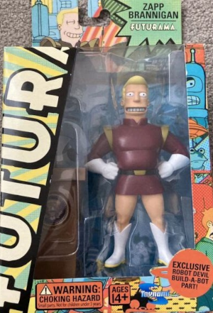
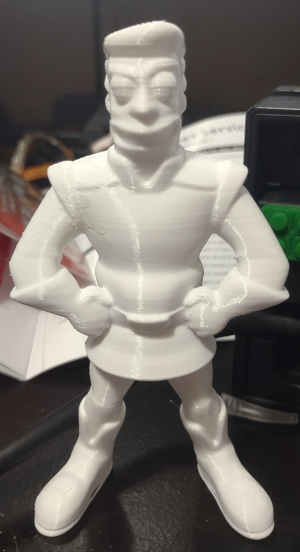
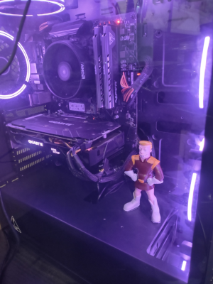
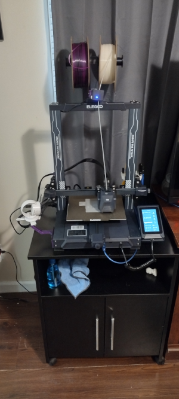
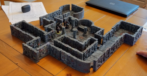
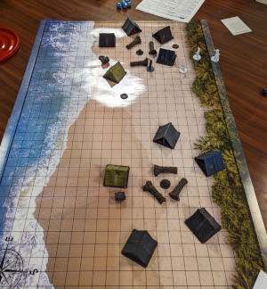
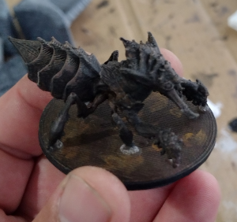
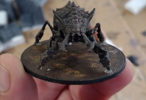
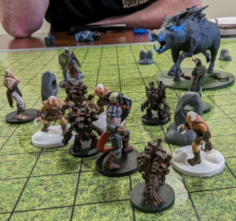

My wife keeps telling me I have too many hobbies. In all fairness to her It seems like I keep acquiring new ones all the time!
I actually got into 3d printing in a funny kind of way. I really wanted a Zapp Brannigan action figure from the TV show Futurama. Unfortunately they no longer make them so purchasing one meant that I would have to look on eBay and pay an exorbant amount. At the time the cheapest one I could find was $300. I knew I could buy a 3D printer for less than that. I resolved to buy a 3D printer and print my own Zapp figure.
It took some convicing of my wife to get a 3D printer. As I said she thinks I have too many hobbies already. She also heard that 3D printing can be difficult and she was worried that I would be too frustrated getting it to print something that I wouldn't actually use it. Obviously the first thing I wanted to print was a new Zapp Figure.
I printed him, successfully I think. Unfortunately he was unpainted and bare white plastic. I had to go to the store and get some paints and paint this guy. Once I completed that, and he still looked ok, I placed him within the case of my custom built desktop PC.
Here is a pretty good picture of my 3d printer. I have a Neptune 3 Pro
I've played D&D most of my life. I started playing as a child on the school bus as a way to kill the time, but it wasn't long until I was "convinced" to become a Dungeon Master (DM) to keep the games going and I have been one ever since. I've probably been a DM since I was 13 or so.
My first listed hobby of 3D printing has played into my hobby of playing D&D as well though. I have begun printing my own dungeon tiles and miniatures for my friends and I to use.
    Back Home
Want to contact me? Please check out my Contact Me page